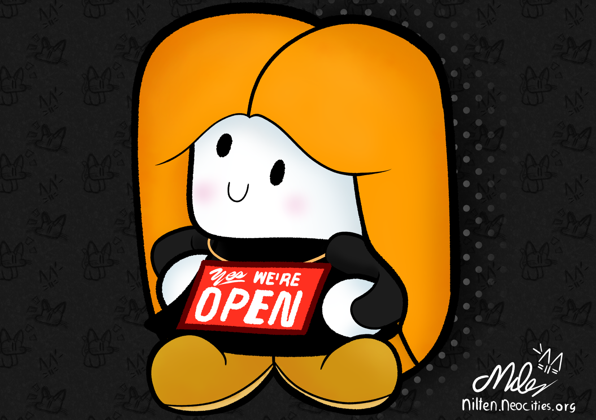
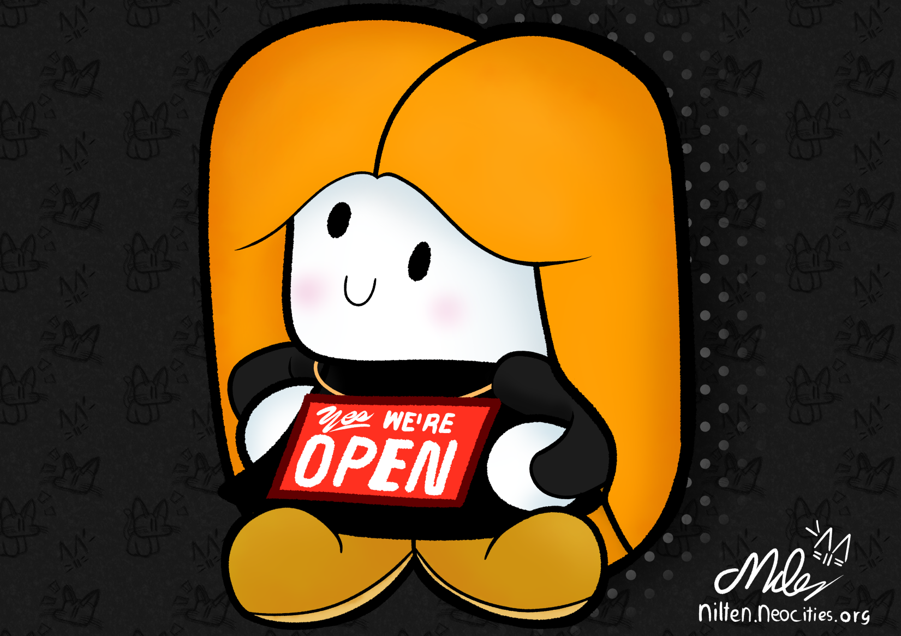

I'm back, folks !
I'm back, folks !
Ten Weeks.
TEN FUCKING WEEKS. REMEMBER THE ITV STRIKE OF 1979?
THAT'S THE SAME AMOUNT OF TIME ITV WAS OFF THE AIR IN 1979 AFTER THE ENGINEERS WENT ON STRIKE FOR A HIGHER PAYCHECK.
And that's how long this site has been offline as well ! Funnily enough in the same time window...
First of all, welcome back, or if this is the first time you see my itty bitty little miles nilten face around here, welcome ! Glad to see you !
Second of all... I'm sorry !
Now, why did it take me so long to overhaul this site?
That's a good question, because i genuinely don't really know either ! Apparently i was procrastinating? Eventhough i know for a fact that i was working on this overhaul project almost daily?
My brain is big doo doo at remembering these things...
I mean i definitely was busy with other stuff behind the scenes, but ten weeks is a lot of time and i'm pretty sure i would have been able to finish all of this sooner !
All this is kind of nostalgic to me in a weird way, because my slow ass took 1.5 years to get this site up and running to begin with !
Nothing has changed in that time... I'm still slow as fuck when it comes to these things, i supose...
But hey ! I'm back now ! And everything's a bit prettier now !
So... what exactly is new?
We have pretty borders around everything !
No more flat colours ! Everything has a paper-esqe look now !
AN ANIMATED BACKGROUND WITH KITTY CATS !
Added a welcome page !
Overhauled the gallery slide code ! (fullscreen support and multiple gallery instances on one page without the js code having a fit !)
Sorted Sketches, Artworks and 3D Stuff into those overhauled gallery slides !
Added a new entry to the portfolio page (my work on the german translation of vpkedit) !
Welcoming FireJojoBoy to the affiliates tab !
New and overhauled header images for the pages ! (except for the blog page haha whopsies)
Added new thingies and blingies to the about page !
NEW SILLY HEADER QUOTES THAT'S WHAT YOU GUYS REALLY WANT, RIGHT?
Added a new font ! (Ubuntu-Medium and Ubuntu-Bold to be exact !)
Added a secret making-of page somewhere !
"T-that is what took you nearly three months to complete? You haven't even finished the room page!"
yes.
Welcome back !!1!!! Welcomeeeee !!!!! Hiiii !!!
 
